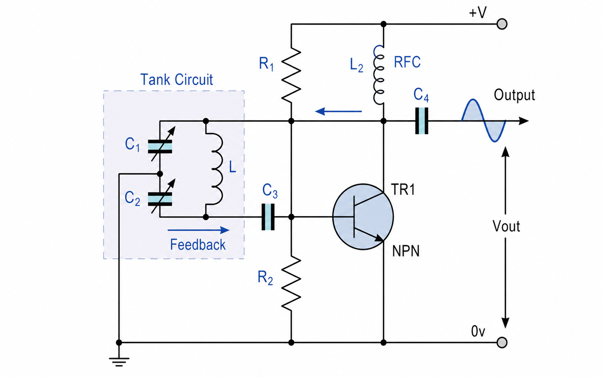

Back to tools
Instrument 002 / Oscillation
Colpitts Oscillator Calculator
Evaluate the ideal LC tank and the DC bias established by the R1-R2 divider.

Equivalent tank capacitance
Resonant frequency
Feedback fraction
DC bias at R2
Operating principle
C1 and C2 form a capacitive divider across L. At resonance, energy alternates between the capacitors' electric field and the inductor's magnetic field. The amplifier restores tank losses while the divider returns feedback.
The calculation treats components as ideal. A physical oscillator also depends on transistor bias, loop gain, loaded Q, parasitic capacitance, inductor resistance, and device bandwidth.